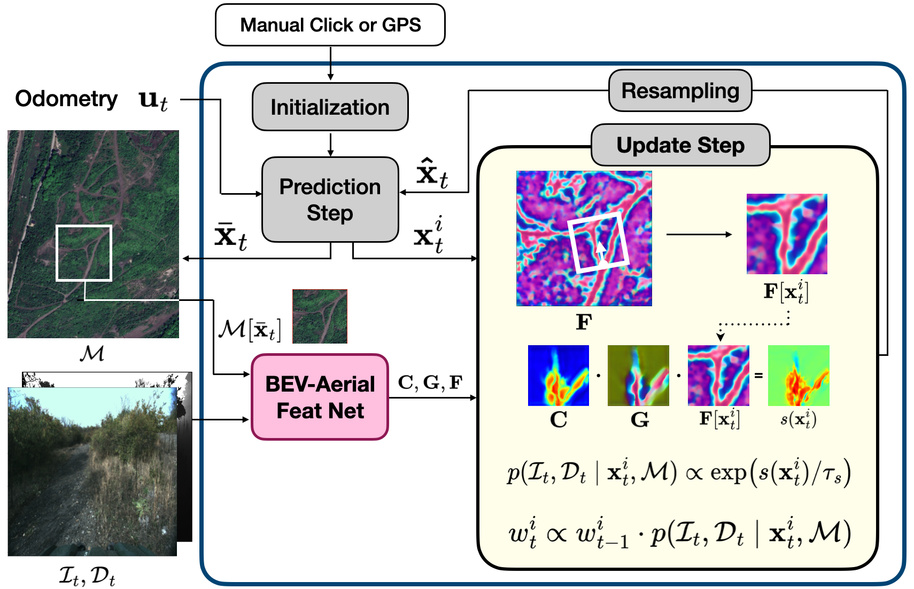

De l'Outil Militaire au "Capteur Planétaire"
Historiquement, le GNSS (Global Navigation Satellite System) est né d'un besoin militaire de synchronisation temporelle et de positionnement (GPS aux USA, GLONASS en URSS). Initialement fondé sur des constellations en orbite moyenne (MEO, environ 20 000 km), son usage civil s'est généralisé dans les années 90.

Figure 1 : Constellations GNSS globales
L'Inscription dans le Big Data
L'inscription du GNSS dans le domaine du Big Data n'est pas nouvelle, mais elle a changé de nature :
La Donnée comme Correction
Depuis des décennies, atteindre une précision centimétrique nécessite d'assimiler des flux massifs de données provenant de stations au sol pour corriger les erreurs de signal induites par l'atmosphère.
Le Satellite comme Capteur Passif
Le signal GNSS est utilisé depuis longtemps pour la "réflectométrie", transformant chaque satellite en un capteur capable de mesurer l'état des océans ou de l'ionosphère en analysant la déformation des ondes radio.
Le Passage à l'Échelle (2025)
Le GNSS connaît en 2025 une mutation profonde avec l'émergence des constellations LEO PNT (Positioning, Navigation, and Timing). Situés entre 500 et 1 500 km, ces satellites offrent une puissance de signal accrue et une géométrie de constellation qui change beaucoup plus rapidement que les systèmes MEO.
Convergence Ultra-Rapide
Cette architecture permet une convergence ultra-rapide des algorithmes : le temps nécessaire pour atteindre une précision centimétrique passe de plusieurs dizaines de minutes à quelques secondes seulement. Pour l'informaticien, cela signifie gérer des flux de données de navigation dont la vélocité est démultipliée.
"Le LEO PNT bouleversera l'ordre établi en matière de navigation par satellite en offrant un surcroît de précision, résilience et pénétration du signal, avec à la clé de nouvelles applications et autant de relais de croissance pour l'économie."
— Hervé Derrey, Président-Directeur général de Thales Alenia Space
20,000 km
Altitude MEO (GPS, Galileo)
500-1,500 km
Altitude LEO PNT
< 10 sec
Convergence LEO PNT
L'Hybridation PPP-RTK et les Réseaux Ouverts
Le traitement des données de navigation repose désormais sur des méthodes hybrides massives :
PPP-RTK et PPP-AR
Ces technologies combinent la couverture mondiale du Precise Point Positioning (PPP) avec la rapidité du Real-Time Kinematic (RTK). Elles permettent de résoudre les ambiguïtés de phase en temps réel pour une précision millimétrique, essentielle pour le guidage de précision.
Qu'est-ce que le PPP-RTK ?
Le PPP-RTK est une technique de positionnement qui combine :
- PPP : Utilise des corrections d'orbite et d'horloge satellites précises pour un positionnement global
- RTK : Utilise des corrections locales à partir de stations de référence pour une convergence rapide
- Résultat : Précision centimétrique en quelques secondes au lieu de 20-30 minutes
Centipede-RTK : Résilience Open-Source
Ce réseau collaboratif open-source s'est imposé comme une infrastructure de référence en Europe avec plus de 400 stations actives fin 2025. Sa résilience a été démontrée lors des tempêtes solaires d'octobre 2025, où il a maintenu un service opérationnel alors que les services satellitaires propriétaires subissaient des interruptions.
400+
Stations Centipede actives
< 2 cm
Précision RTK
100%
Disponibilité (tempêtes solaires)
Localisation Haut Débit : Synergie 5G-Advanced et IA
La localisation moderne est devenue un problème de Big Data multimodal, où le signal satellitaire n'est qu'une entrée parmi d'autres.
Fusion 5G/6G
L'intégration native de la localisation dans les réseaux 5G-Advanced et les futurs standards 6G permet des transferts de données de correction à latence ultra-faible. L'IA embarquée dans le réseau permet des "handovers" sans latence en anticipant les mouvements des terminaux.
Avantages 5G-GNSS
- Latence < 1 ms pour corrections RTK
- Couverture hybride (indoor/outdoor)
- Multi-constellation (GPS + Galileo + BeiDou)
- Handovers prédictifs par IA
Technologies Avancées
- Signaux Chirp : Amélioration résolution temporelle
- TDMA : Résistance au brouillage
- Network Slicing : Garantie de QoS pour applications critiques
Signaux Chirp et Précision Industrielle
De nouvelles méthodes de modulation utilisent des signaux chirp pour améliorer la résolution temporelle et la résistance au brouillage dans les environnements industriels complexes. Ces signaux à fréquence variable permettent une localisation submétrique même en environnements GNSS-dégradés.
Le Futur & R&D : Géo-localisation Neuronale sans GPS
Pour les zones "GNSS-denied" (canopée dense, environnements off-road, tunnels), la recherche s'oriente vers des méthodes purement logicielles.
BEV-Patch-PF : Localisation par Vision
Le système BEV-Patch-PF, dévoilé fin 2025, utilise des réseaux de neurones pour faire correspondre des vues "Bird's-Eye-View" (BEV) issues de caméras locales avec des cartes aériennes. Cette approche réduit l'erreur de trajectoire d'un facteur 7 par rapport aux méthodes classiques.
Fonctionnement BEV-Patch-PF
- Capture de vues caméra locales (voiture, drone)
- Transformation en perspective Bird's-Eye-View par réseau neuronal
- Matching avec bases de données cartographiques aériennes
- Filtrage particulaire pour estimation robuste de position

Figure 4 : Pipeline du système BEV-Patch-PF pour localisation off-road